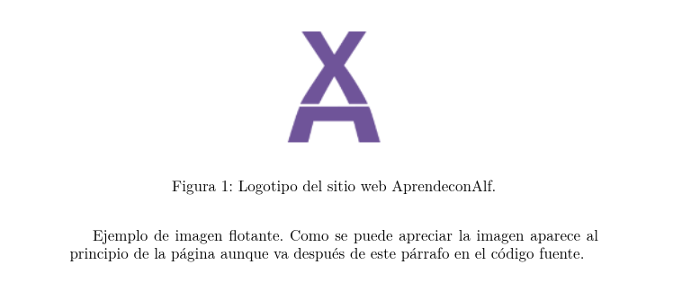
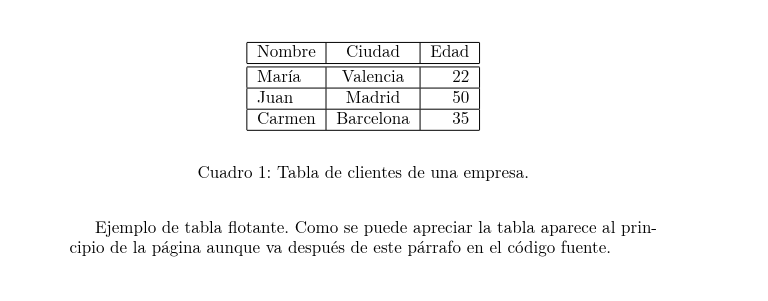

9. Entornos flotantes#
Hay determinados contenidos, como por ejemplo las tablas o las imágenes que son bloques indivisibles, de manera que cuando no hay espacio suficiente en la página para encajarlos, pasan a colocarse en la siguiente página, dejando en la página anterior un espacio vertical vacío poco estético.
La solución consiste en incluir estos contenidos en un entorno flotante, que se ubicará automáticamente sin dejar espacios vacíos. Como estos contenidos pueden aparecer lejos de su posición en el código fuente, para que no estén descontextualizados suelen llevar asociada una leyenda.
Existen dos entornos flotantes, para figuras y tablas.
9.1. Entorno flotante para figuras#
El entorno flotante para figuras es figure tiene el siguiente esqueleto.
\begin{figure}[posición]
Código de las imágenes
\label{etiqueta}
\caption{leyenda}
\end{figure}
El argumento opcional indica la preferencia de ubicación de la figura en la página (h en el lugar en el que aparece en el código fuente, t arriba, b abajo). \(\LaTeX\) intentará ubicar la figura en esa posición salvo que no sea posible.
Las figuras flotantes se numeran automáticamente y el comando \label{...} asigna una etiqueta al entorno flotante para poder referenciarlo desde otras partes del documento. Por su parte, el comando \caption{...} crea la leyenda de la figura.
% PREÁMBULO
\usepackage{graphicx}
% CUERPO
\begin{document}
Ejemplo de imagen flotante. Como se puede apreciar la imagen aparece al
principio de la página aunque va después de este párrafo en el código
fuente.
\begin{figure}[t]
\begin{center}
\includegraphics{img/logo-aprendeconalf.png}
\end{center}
\label{img-1}
\caption{Logotipo del sitio web AprendeconAlf.}
\end{figure}
\end{document}
Salida

Para incluir el listado de figuras de un documento en cualquier parte se utiliza el comando \listoffigures.
9.2. Entorno flotante para tablas#
El entorno flotante para tablas es table y su esqueleto es muy parecido al del entorno para figuras.
\begin{table}[posición]
Código de la tabla
\label{etiqueta}
\caption{leyenda}
\end{table}
Las tablas, al igual que las figuras, se enumeran automáticamente y pueden referenciarse después asignándoles una etiqueta con el comando \label{...}.
% CUERPO
\begin{document}
Ejemplo de tabla flotante. Como se puede apreciar la tabla aparece al
principio de la página aunque va después de este párrafo en el código
fuente.
\begin{table}[t]
\begin{center}
\begin{tabular}{|l|c|r|}
\hline
Nombre & Ciudad & Edad \\
\hline
\hline
María & Valencia & 22 \\
\hline
Juan & Madrid & 50 \\
\hline
Carmen & Barcelona & 35 \\
\hline
\end{tabular}
\end{center}
\label{img-1}
\caption{Tabla de clientes de una empresa.}
\end{table}
\end{document}
Salida

Para incluir el listado de figuras de un documento en cualquier parte se utiliza el comando \listoftables.